|
Sondage I
Vous préférez-quoi ?
1️⃣ - Crêpes
2️⃣ - Galettes
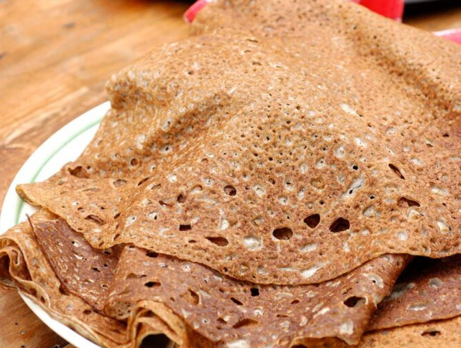
|
Sondage II
Si vous pouviez apprendre une langue en quelques secondes, quelle langue apprendriez-vous ?
| 1️⃣ - Anglais | 4️⃣ - Espagnol | 7️⃣ - Chinois |
| 2️⃣ - Breton | 5️⃣ - Italien | 8️⃣ - Japonais |
| 3️⃣ - Allemand | 6️⃣ - Russe | 9️⃣ - Autre |
|
|
Sondage III
Possédez-vous un Gwenn-ha-du ?
1️⃣ - Oui
2️⃣ - Non
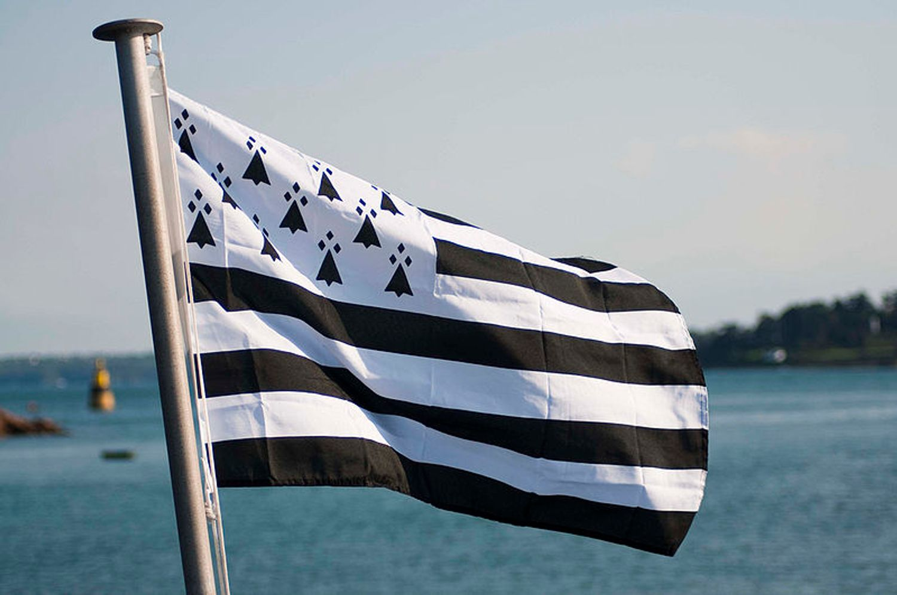
|
Sondage IV
Quel statut devrait avoir la Bretagne ?
1️⃣ - Indépendante
2️⃣ - Autonome
3️⃣ - Région
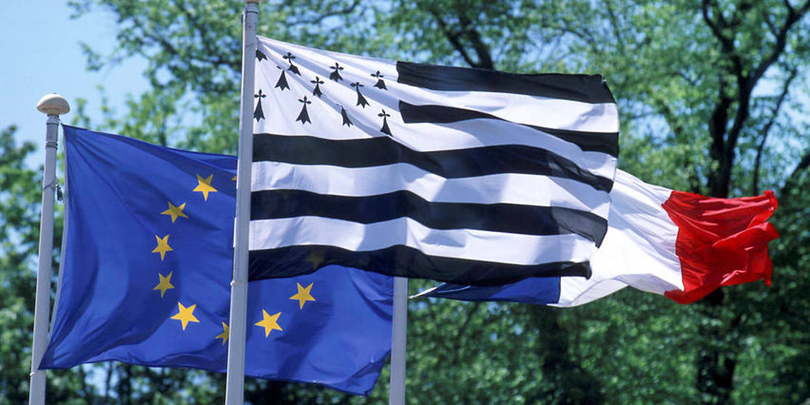
|
|
Sondage V
Quel club de football breton supportez vous en ligue 1 ?
1️⃣ - Rennes
2️⃣ - Nantes
3️⃣ - Lorient
4️⃣ - Brest
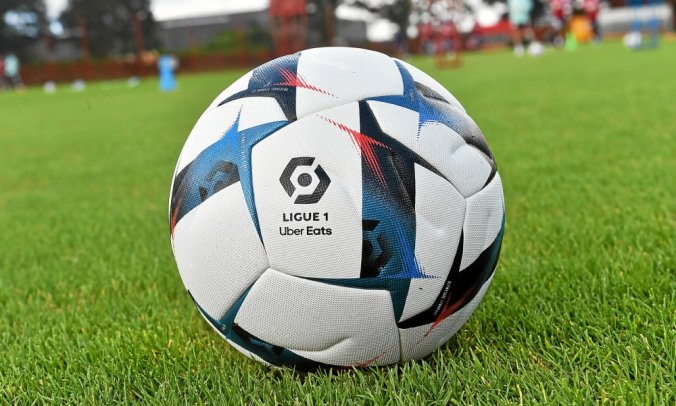
|
Sondage VI
Quel est selon vous le meilleur département en Bretagne ?
1️⃣ - Le Finistère
2️⃣ - Le Morbihan
3️⃣ - Les Côtes-d'Armor
4️⃣ - L'îlle-et-Vilaine
5️⃣ - La Loire-Atlantique
|
|
Sondage VII
Quelle ville devrait être la capitale de la Bretagne ?
1️⃣ - Rennes
2️⃣ - Nantes
|
Sondage VIII
Où se situe le Mont-Saint-Michel ?
1️⃣ - Bretagne, le plus bel endroit du monde et le Palais des Celtes. 
2️⃣ - Normandie ou quelque chose du genre 🦁
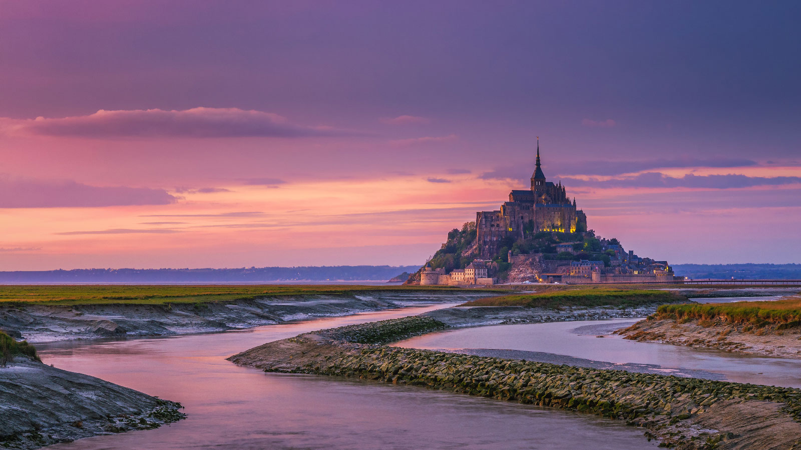
|
|
Sondage IX
Quel est votre avis sur l'Indépendance de l'Écosse ?
1️⃣ - Pour 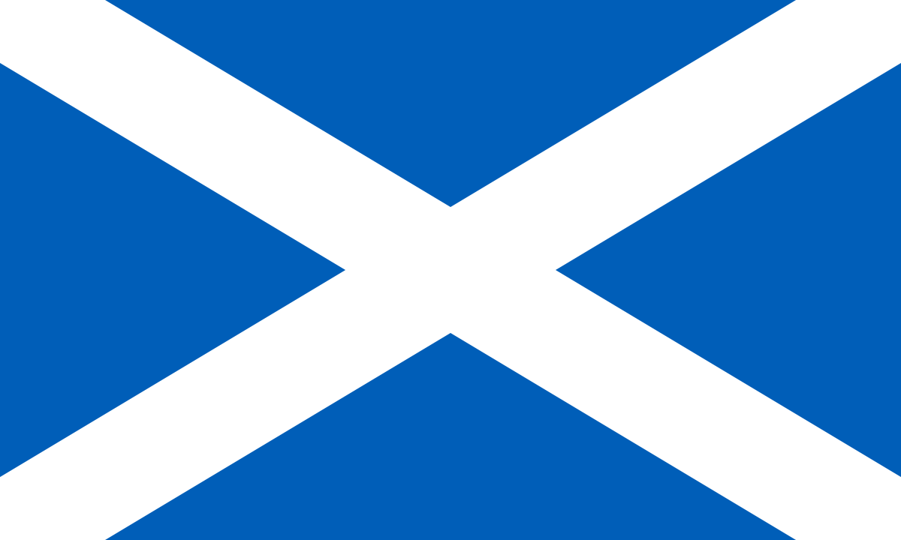
2️⃣ - Contre 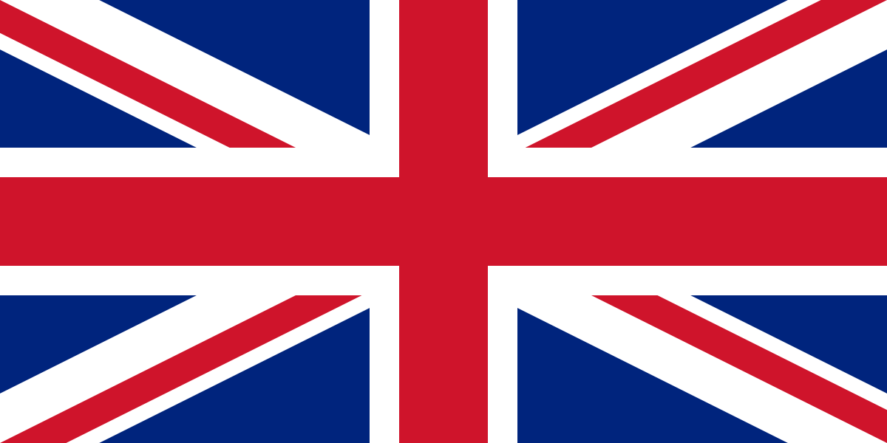
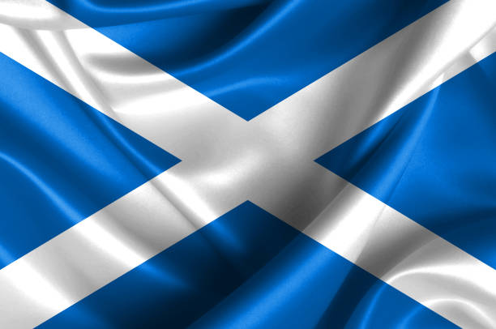
|
Sondage X
Que pensez vous du Rattachement de l'Irlande du Nord à la République d'Irlande ?
1️⃣ - Pour 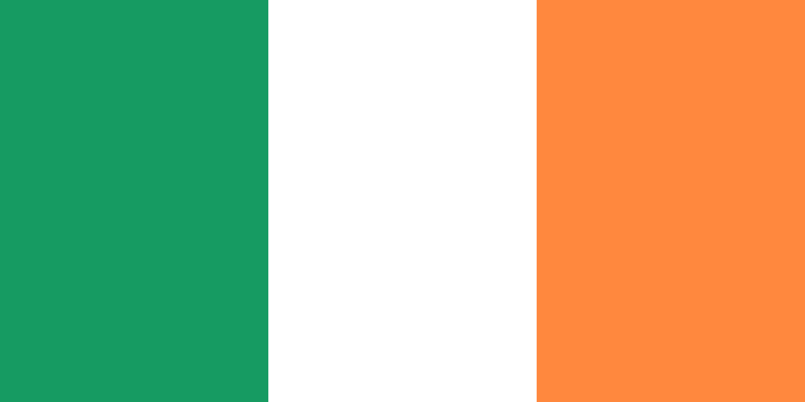
2️⃣ - Contre
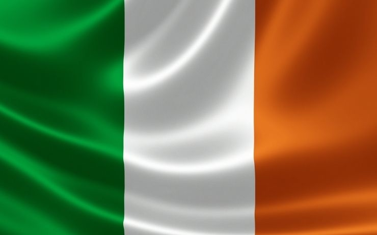
|
|
Sondage XI
Si une guerre éclatait entre la Bretagne et la France pour qui vous battriez vous ?
1️⃣ - La Bretagne
2️⃣ - La France
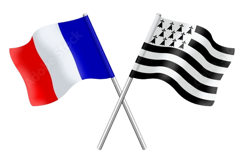
|
Sondage XII
Soutenez-vous un club breton ou un club français en Ligue 1 et 2 dans votre top 1 ?
1️⃣ - Club Breton (Lorient-Rennes-Nantes-Guingamp-Brest)
2️⃣ - Club Français (PSG-OM-OL....) 
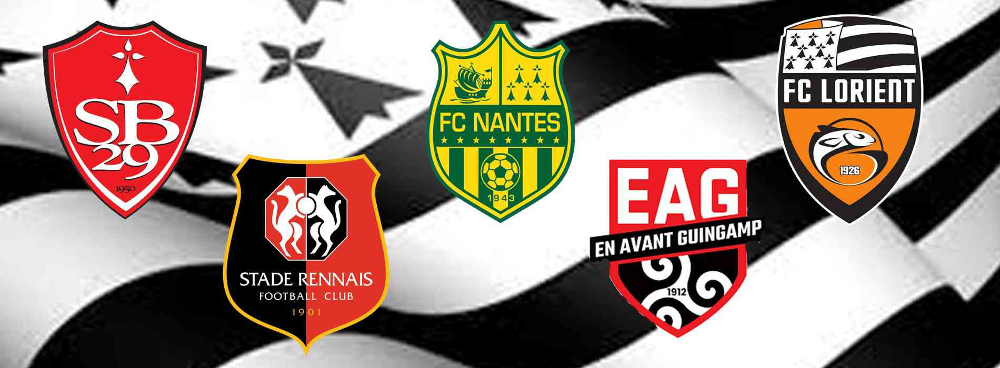
|
|
Sondage XIII
Vous préférez quel beurre ?
1️⃣ - Le Beurre Doux
2️⃣ - Le Beurre Demi-Sel
3️⃣ - Le Beurre Demi-Sel avec des Cristaux de Sel
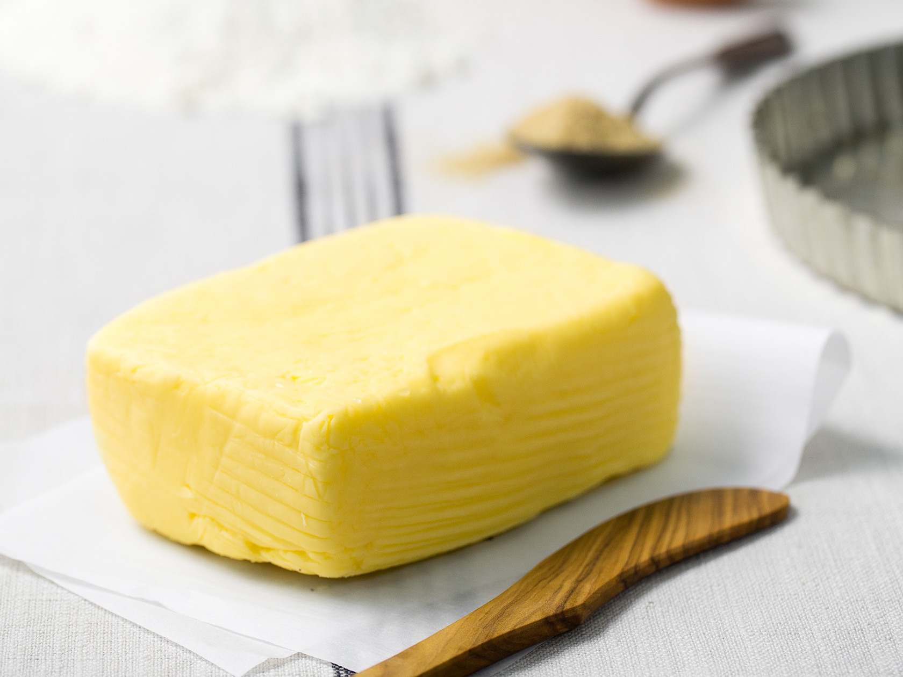
|
Sondage XIV
Pour quelle nation celtique avez-vous le plus d'admiration Bretagne exclue ?
1️⃣ - L'Écosse
2️⃣ - L'Irlande
3️⃣ - Le Pays de Galles 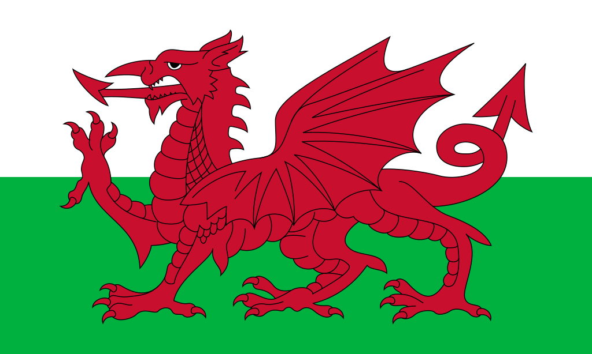
4️⃣ - Cornouailles 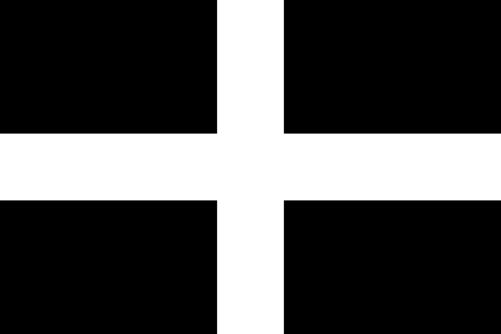
5️⃣ - Île de Man 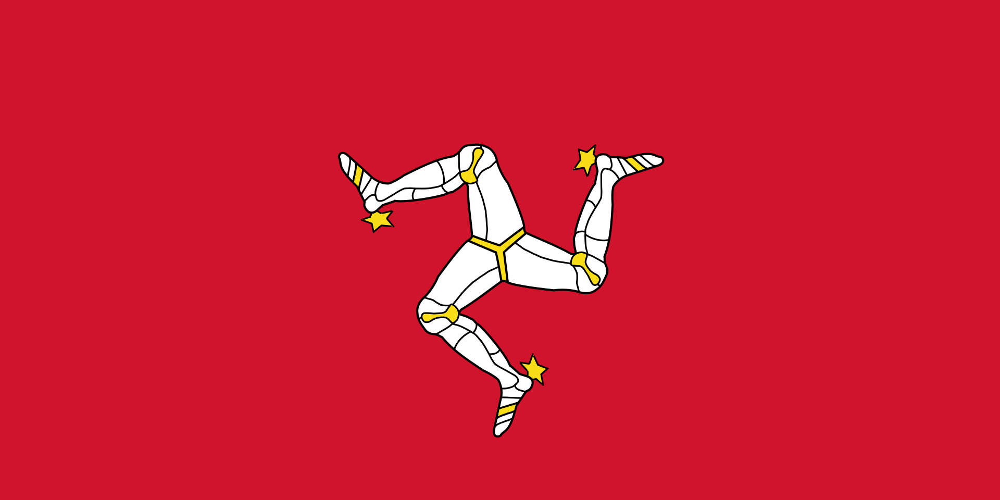
6️⃣ - Galice
7️⃣ - Asturies 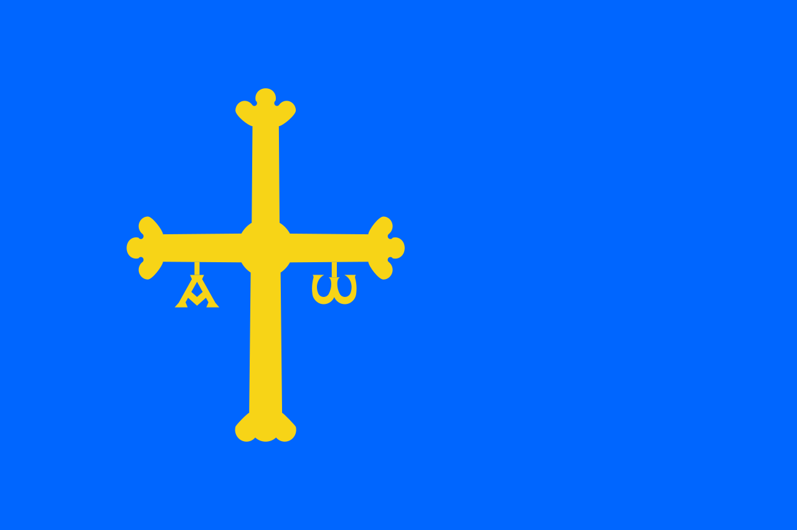
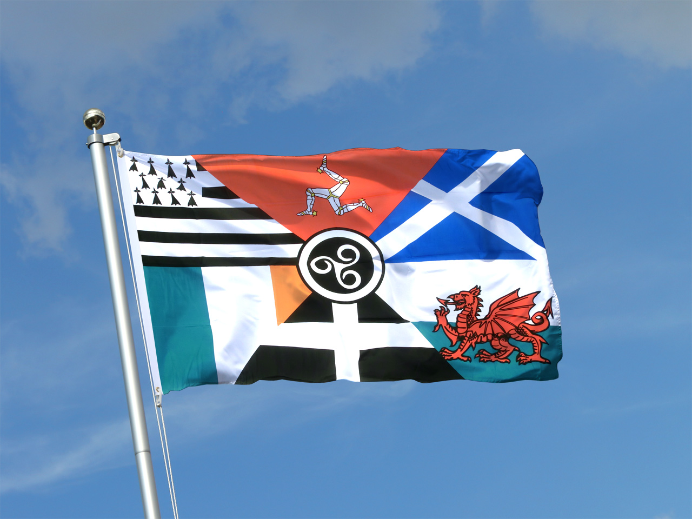
|
Sondage XV
Quelle problème aurait la Bretagne principalement si elle devenait indépendante ?
1️⃣ - Économie (≈120 milliards€) 💰
2️⃣ - Montée des Eaux 🌊
3️⃣ - Énergie (Pas de centrales ☢️)
4️⃣ - Accessibilité (Pas d'autoroutes 🛣️)
|
Sondage XVI
Quand on vous demande quelle est votre nation, comment vous-identifiez vous ?
1️⃣ - Totalement Français
2️⃣ - Français et un peu breton
3️⃣ - Les 2, vous vous sentez autant breton que français
4️⃣ - Plus breton que français
5️⃣ - Totalement breton
|
|
Sondage XVII
En cette fin d'année qui approche, que pensez-vous de Noël en général ?
1️⃣ - J'ai trop hâte c'est génial
2️⃣ - c'est bien, on a des cadeaux au moins
3️⃣ - osefement osef
4️⃣ - m'en fous
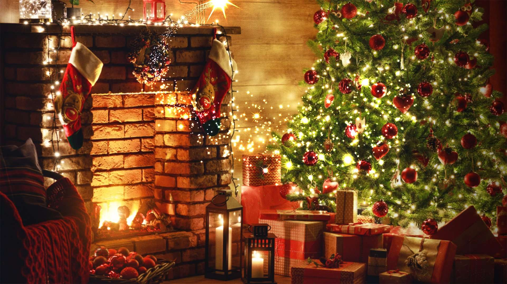
|
Sondage XVIII
Qu'est-ce qui fait d'un breton ce qu'il est selon vous ?
1️⃣ - Breton de Terre • Né en Bretagne
2️⃣ - Breton de Sang • Originaire de Bretagne à une ou deux générations
3️⃣ - Breton de Cœur • Amoureux de la Bretagne et sa Culture
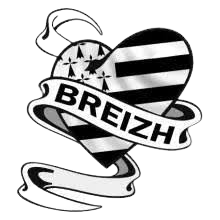
|
|
Sondage XIX
Quelle est votre département préféré ?
1️⃣ - Côtes-d'Armor (22)
2️⃣ - Morbihan (56)
3️⃣ - Îlle-et-Vilaine (35)
5️⃣ - Finistère (29)
6️⃣ - Loire-Atlantique (44)
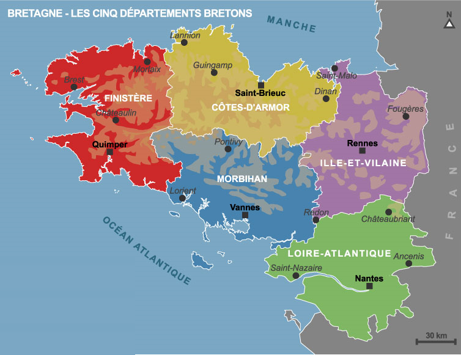
|
Sondage XX
Selon vous, serait-ce mieux que l'empire breton réunisse toutes les régions celtes (la capitale serait Nantes bien évidement) ou que chaque région celte soit indépendante ?
1️⃣ - Unifié
2️⃣ - Séparé
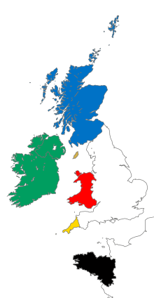
|
|
Sondage XXI
Si la Bretagne déclare la guerre à la Normandie que faites-vous ?
1️⃣ on va a la guerre contre les voleurs du mont st Michel
2️⃣ on va les exterminer a l'aide d'une bombe nucléaire
3️⃣ On fait rien tant qu'ils nous envahissent pas
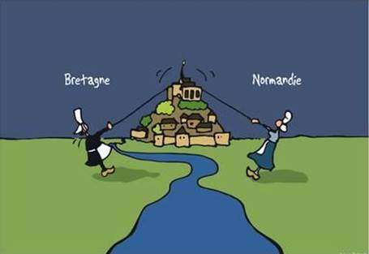
|
Sondage XXII
Quel est votre avis sur le rattachement de la Loire-Atlantique (Pays Nantais) à la Bretagne ?
1️⃣ - Pour
2️⃣ - Contre
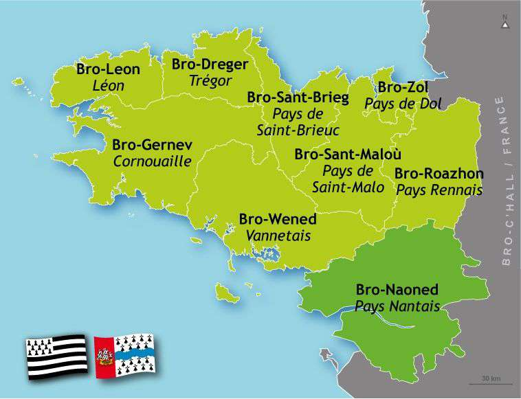
|
|
Sondage XXIII
Possédez-vous un bol breton à votre nom ?
1️⃣ - Oui
2️⃣ - Non
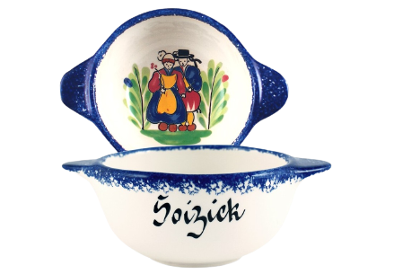
|
Sondage XXIV
Aimeriez vous pouvoir apprendre une langue régionale comme le breton entre autres à l'école ?
1️⃣ - Oui
2️⃣ - Non
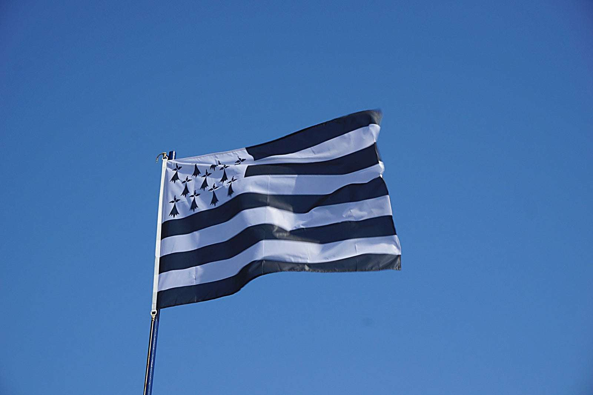
|
|
Sondage XXV
A quelle fréquence buvez vous de l'alcool ?
1️⃣ - Quotidiennement
2️⃣ - Quelques fois par semaine
3️⃣ - Occasionnellement
4️⃣ - Je ne bois pas d'alcool
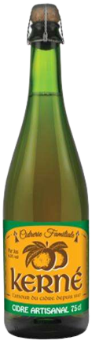
|
Sondage XXVI
Sondage simple, mais avec des avis très partagés ! Quelle nation préférez vous ?
1️⃣ - Irlande
2️⃣ - Écosse
|
|
Sondage XXVII
Si le gouvernement français faisait un référendum sur l'autonomie sur la Bretagne dans 1 premier temps que voteriez vous ?
1️⃣ - Oui
2️⃣ - Non
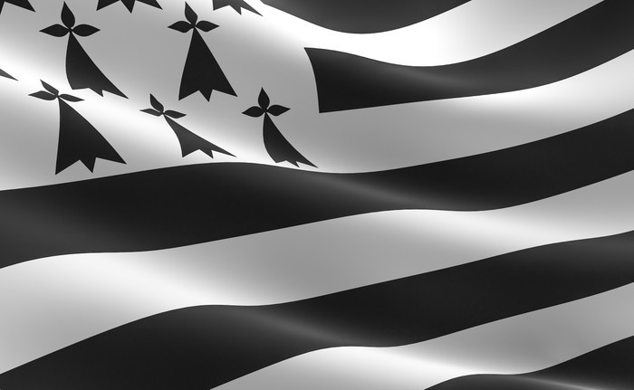
|
Sondage XXVIII
Petit duel Breton/Gallo, Crêpe/Galette et Pays Bretons.
1️⃣ - Basse-Bretagne (Breizh-Izel)
2️⃣ - Haute-Bretagne (Breizh-Uhel)
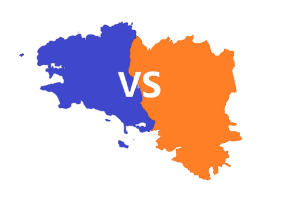
|
|
Sondage XXIX
Quel lieu préférez-vous en Bretagne ?
💡 Le gagnant participera au prochain tournoi face à 7 autres lieux bretons
1️⃣ - Carnac (Pays Vannetais - 56)
2️⃣ - Presque-Île de Crozon (Pays de Cornouaille - 29)
3️⃣ - Vallée des Saints (Trégor - 22)
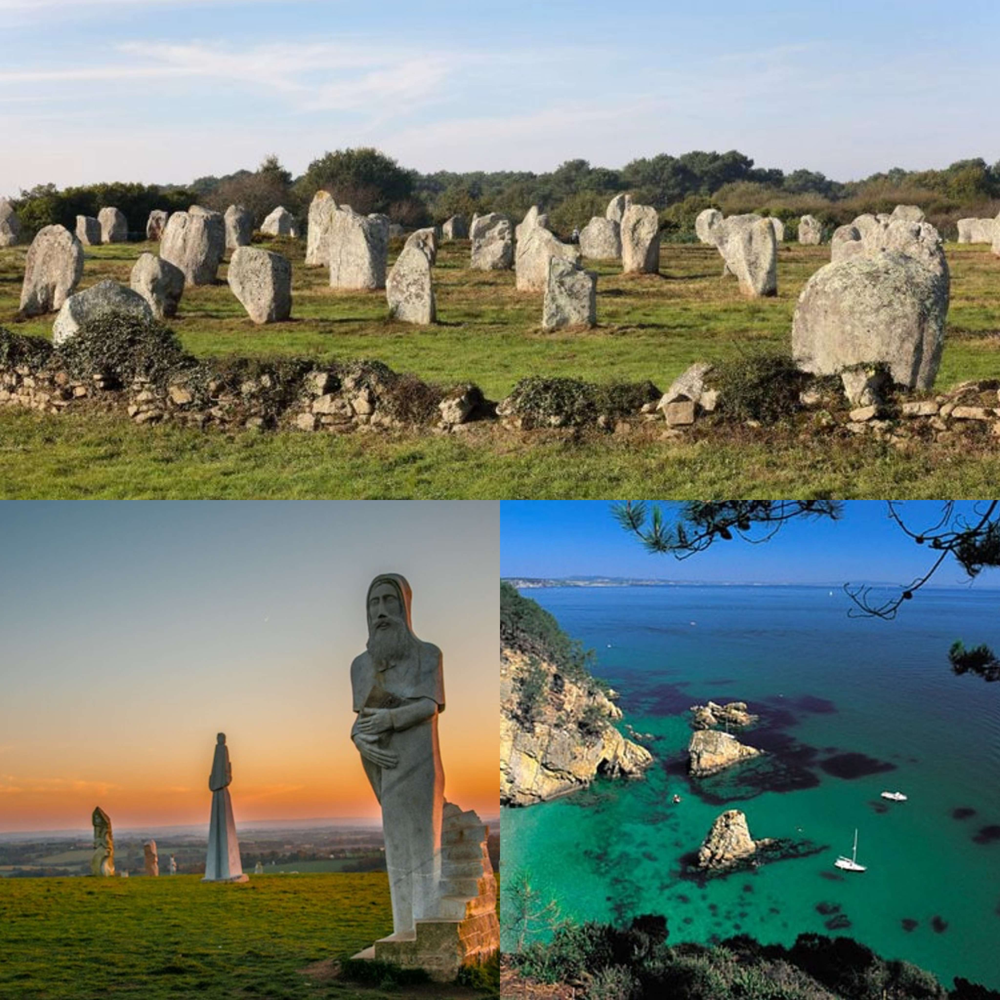
|
Sondage XXX
Qui sont les vrais ennemis de la Bretagne ?
💡 Le gagnant participera au prochain tournoi face à 7 autres lieux bretons
1️⃣ - Les Normands 🤡
2️⃣ - Les Parisiens 😡
3️⃣ - Les Français 🦺🔥
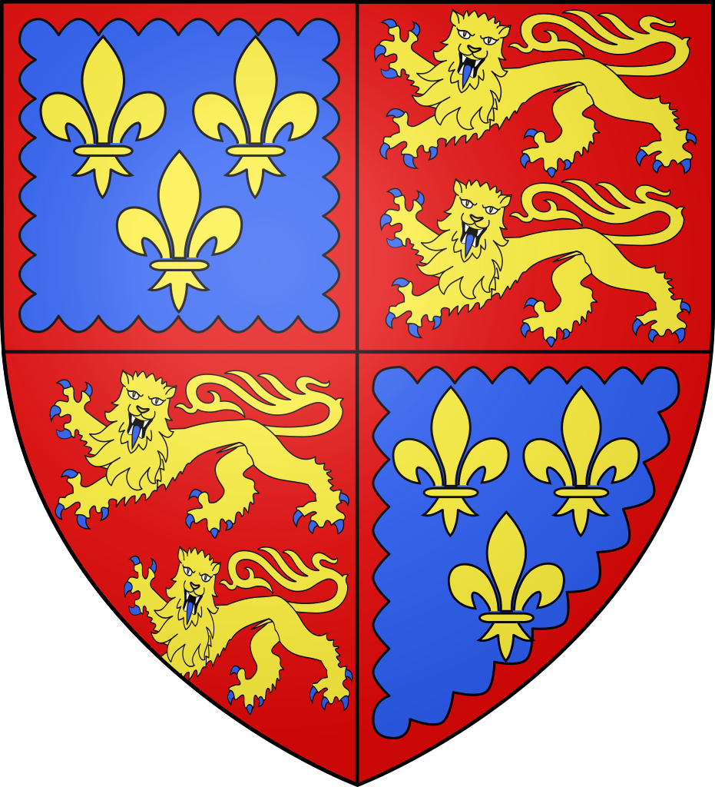
|
|
Sondage XXXI
Quel est vôtre gâteau breton préfère ?
1️⃣ - Le Kouign-Amann
2️⃣ - Le Far breton
3️⃣ - Le Gâteau breton
4️⃣ - Les Palets bretons
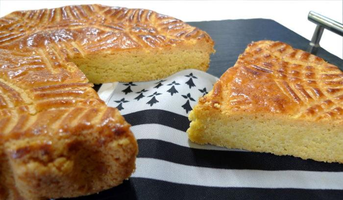
|
Sondage XXXII
Êtes-vous déjà allé en Normandie ?
1️⃣ - Oui
2️⃣ - Non
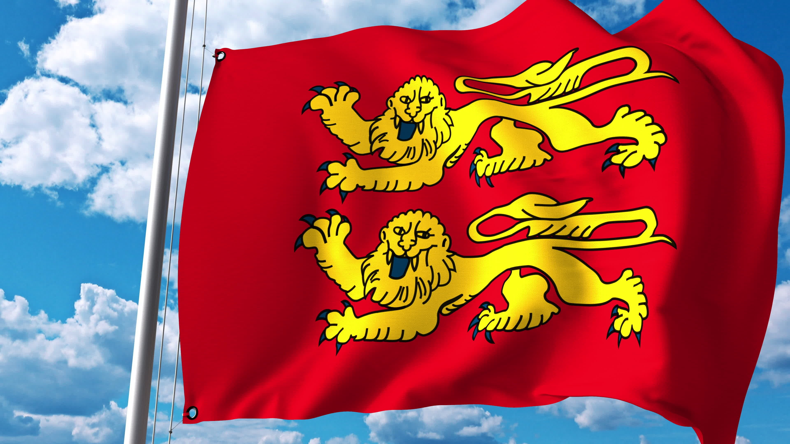
|
|
Sondage XXXIII
Êtes-vous déjà allé sur une île bretonne ? (Ouessant, Molène, Sein, Bréhat, Batz, Groix, Belle-Île...)
1️⃣ - Oui
2️⃣ - Non
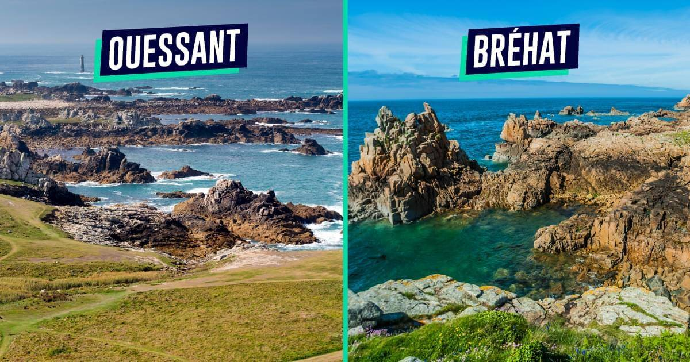
|
Sondage XXXIV
La chanson de Rap Celtique "La Tribu de Dana" reprise de la célèbre chanson traditionnelle bretonne Tri Martolod est elle une musique bretonne selon vous ?
1️⃣ - Oui, c'est une musique bretonne.
2️⃣ - Non, ce n'en est pas.
|
|
Sondage XXXV
Trouvez vous l'histoire et la culture bretonne plus riche que celle de la France ?
1️⃣ - Oui, on est supérieurs
2️⃣ - Non, les Francs ces voleurs
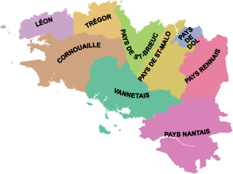
|
Sondage XXXVI
Pour vous la Bretagne c'est... ?
1️⃣ - une région parmis tant d'autres en France
2️⃣ - Un petit pays coincé entre l'océan Atlantique et la France
|
|
Sondage XXXVII
Si la Bretagne devient indépendante, demanderez-vous la nationalité ?
1️⃣ - Oui
2️⃣ - Non
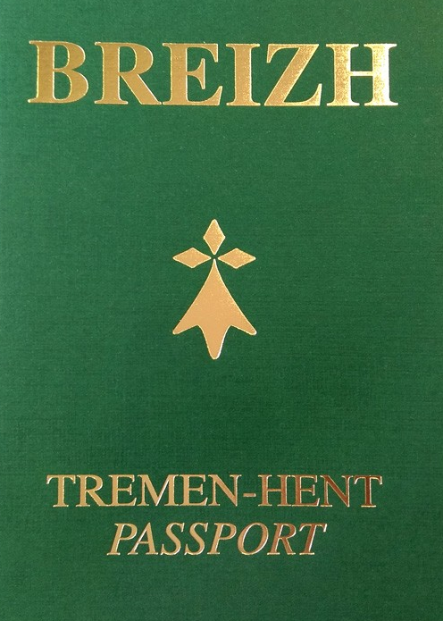
|
Sondage XXXVIII
Est ce que les maisons secondaires en Bretagne sont un fléau surtout dans des endroits fortement peuplés ?
1️⃣ - Oui
2️⃣ - Non
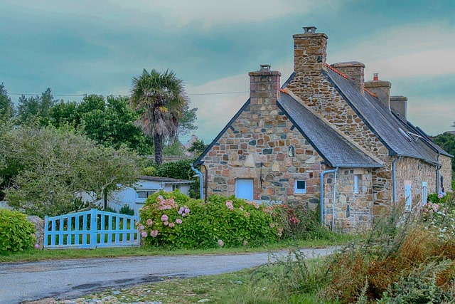
|
 , s'organisent indépendament les un des autres. Des sondages numérotés avec des chiffres romains sont publiés occasionnelement sur le thème de la Bretagne et de l'Interceltique pour vour demander votre avis sur des élements de la culture bretonne ou celtique, ou sur des opinions politiques simples toujours en rapport avec les celtes comme par exemple l'Indépendance de l'Écosse ou les Réunifications territoriales Bretonnes ou Irlandaises.
, s'organisent indépendament les un des autres. Des sondages numérotés avec des chiffres romains sont publiés occasionnelement sur le thème de la Bretagne et de l'Interceltique pour vour demander votre avis sur des élements de la culture bretonne ou celtique, ou sur des opinions politiques simples toujours en rapport avec les celtes comme par exemple l'Indépendance de l'Écosse ou les Réunifications territoriales Bretonnes ou Irlandaises.